1
Risotto warzywne
Grillowany łosoś, oliwa pietruszkowa
40 zł
Bistro SmaczneGO przy ul. Stefana Grota-Roweckiego 6 w Opolu. Przytulne wnętrze, domowe obiady i apetyczne propozycje, które dobrze wyglądają nie tylko na talerzu, ale też na stronie.
Ta wersja strony pokazuje Bistro SmaczneGO w bardziej naturalny sposób — z prawdziwymi zdjęciami lokalu, wnętrza i jedzenia. Dzięki temu odwiedzający od razu widzą klimat miejsca i to, czego mogą się spodziewać na miejscu.
Jasna sala, wygodne stoliki i ciepłe, naturalne dodatki budują przyjemną atmosferę na codzienny obiad.
Na stronie można pokazać zarówno klasyczne obiady, jak i bardziej nowoczesne, kolorowe propozycje.
Prawdziwe zdjęcia pomagają szybciej wzbudzić zaufanie i zachęcić klienta do odwiedzin lub telefonu.
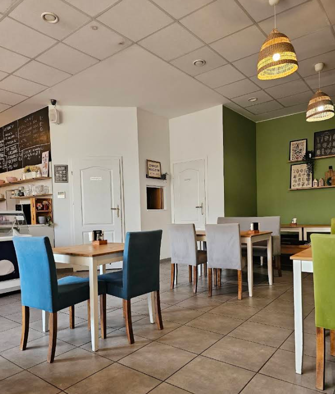
Zdjęcia lokalu od zewnątrz i wewnątrz pokazują, że jest to miejsce przyjazne, schludne i gotowe na gości — zarówno na szybki lunch, jak i spokojny obiad.
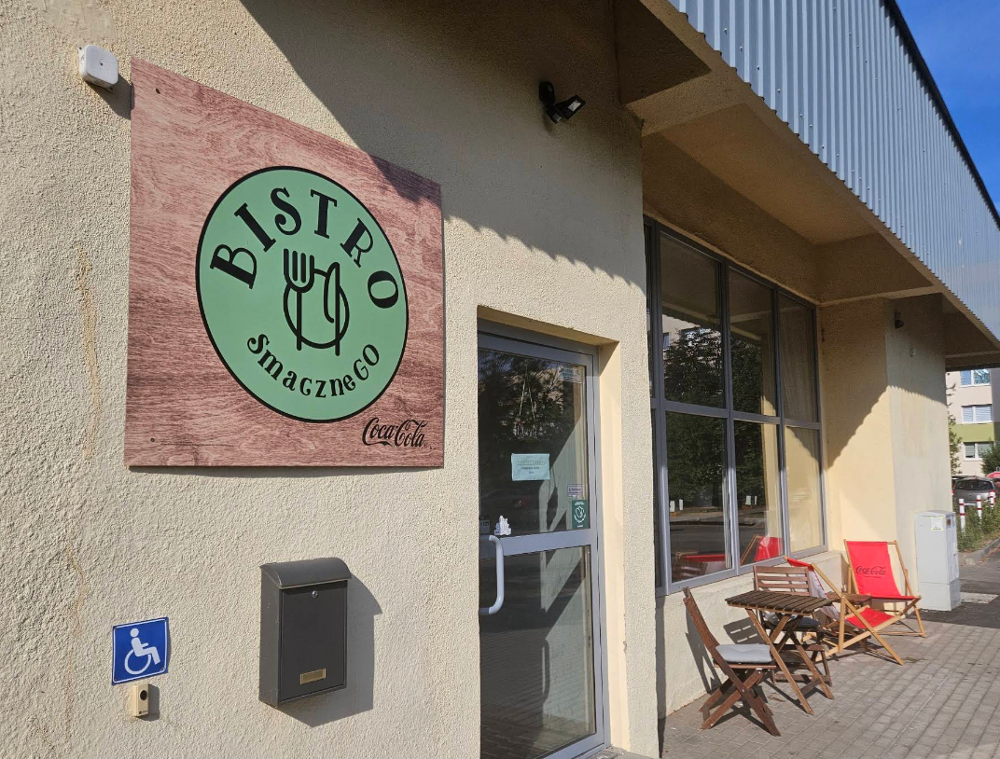
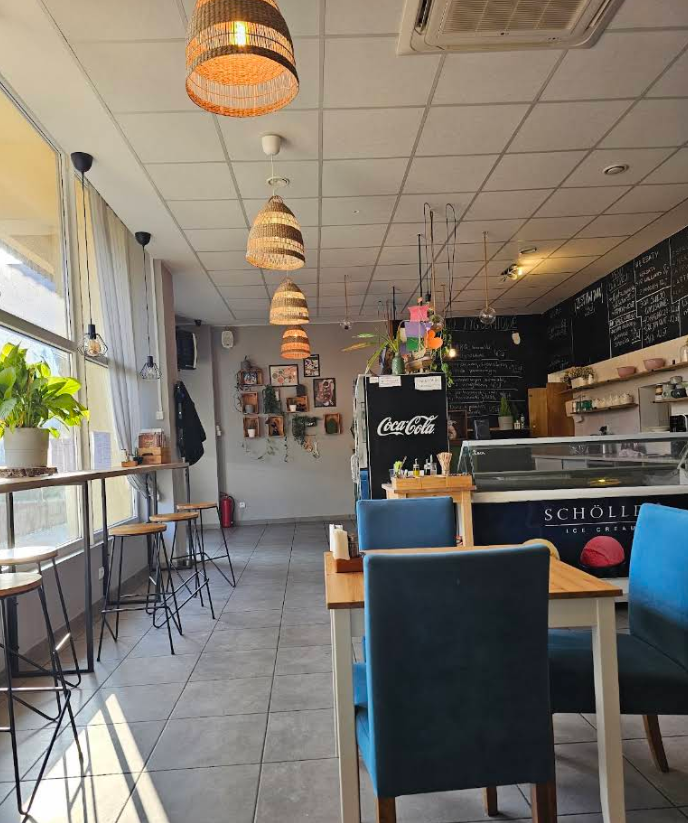
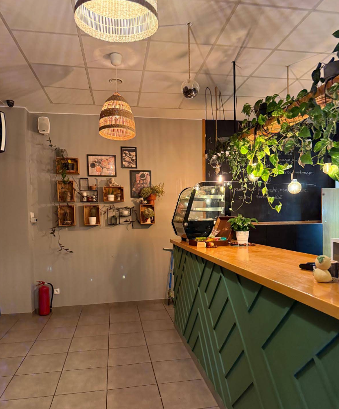
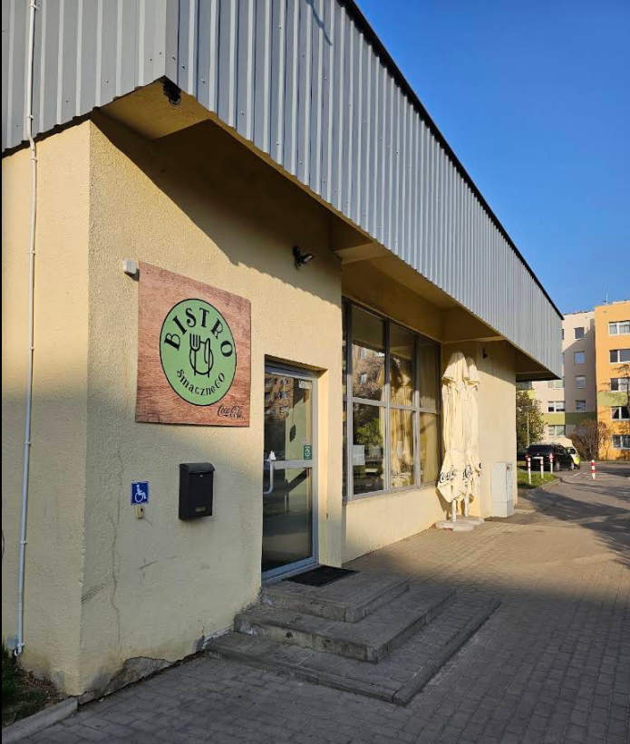
W tej wersji strony pokazujemy przekrój dań — od domowych obiadów po lżejsze i bardziej nowoczesne propozycje. Taka sekcja pomaga od razu zbudować apetyt i zachęca do odwiedzin.
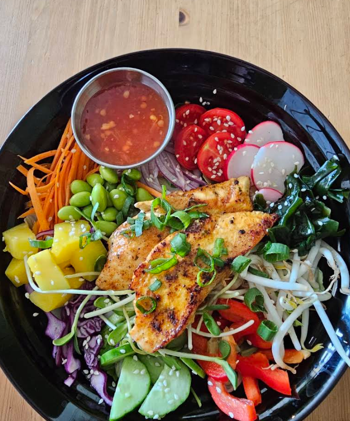
Lżejsza propozycja z warzywami i grillowanym kurczakiem.
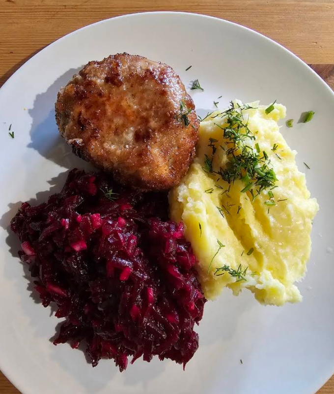
Klasyczny talerz z puree i dodatkami, czyli to, co wielu gości lubi najbardziej.
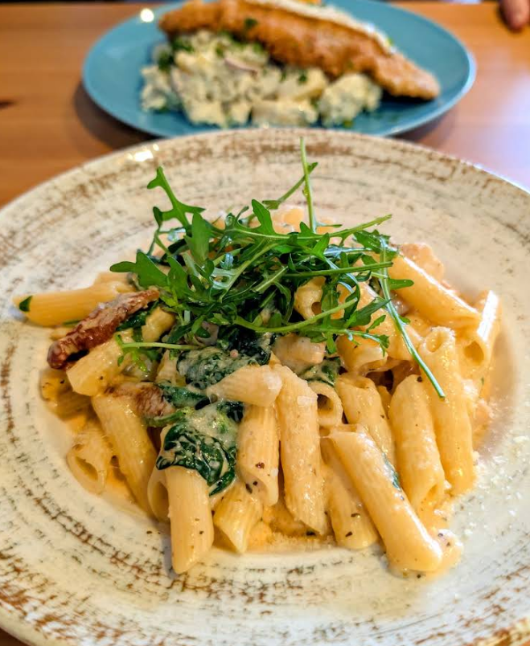
Kremowa propozycja dla osób, które mają ochotę na coś bardziej sycącego.
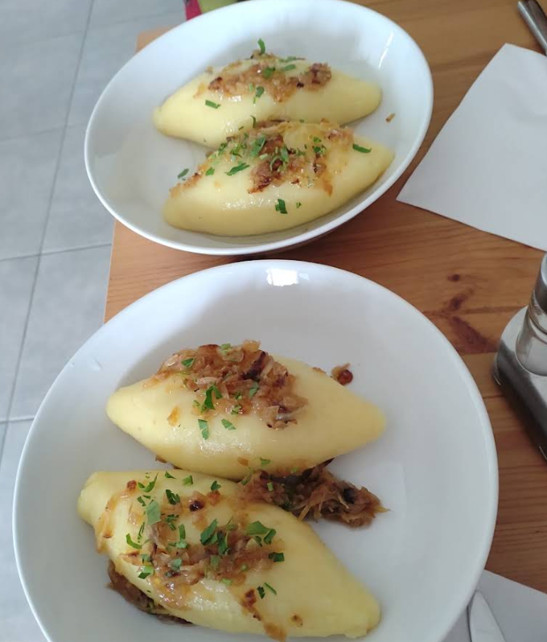
Prosta i apetyczna propozycja utrzymana w domowym charakterze bistro.
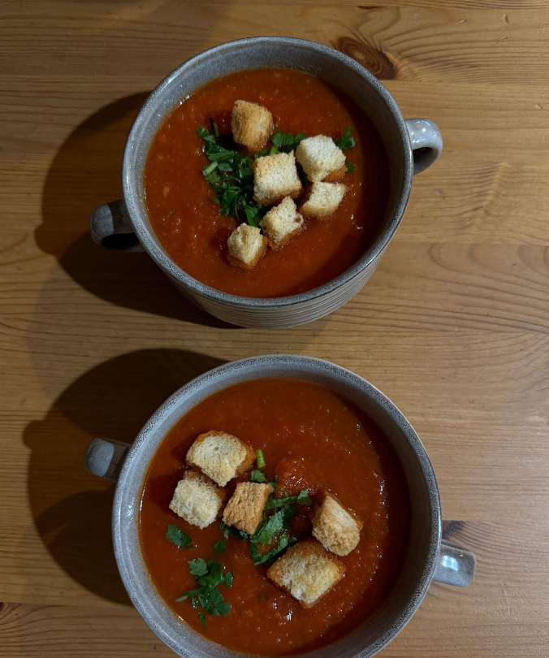
Rozgrzewająca zupa to stały punkt dobrej, codziennej oferty obiadowej.
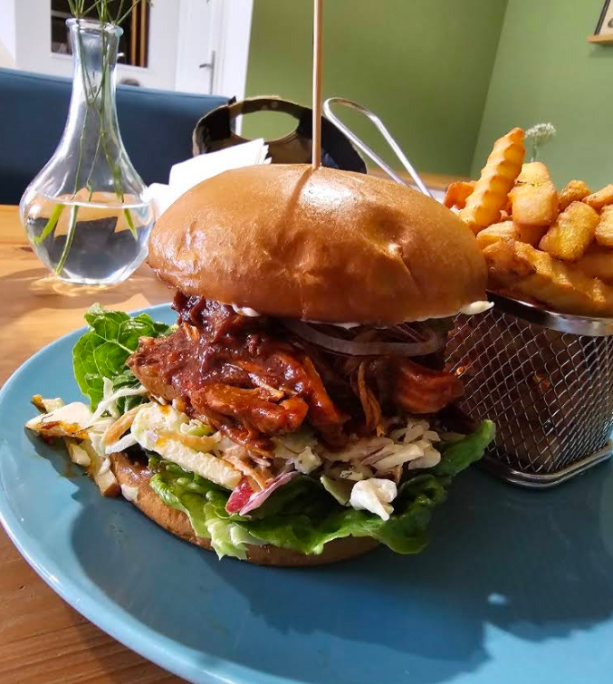
Nowoczesna propozycja dla tych, którzy mają ochotę na coś bardziej wyrazistego.
Najważniejsze oceny i elementy budujące zaufanie pokazane w czytelnym, przewijanym sliderze.
515 616 912
Zadzwoń →
Poniedziałek–piątek: 12:00–17:00
Sobota–niedziela: zamknięte
W święta i dni specjalne godziny mogą ulec zmianie.